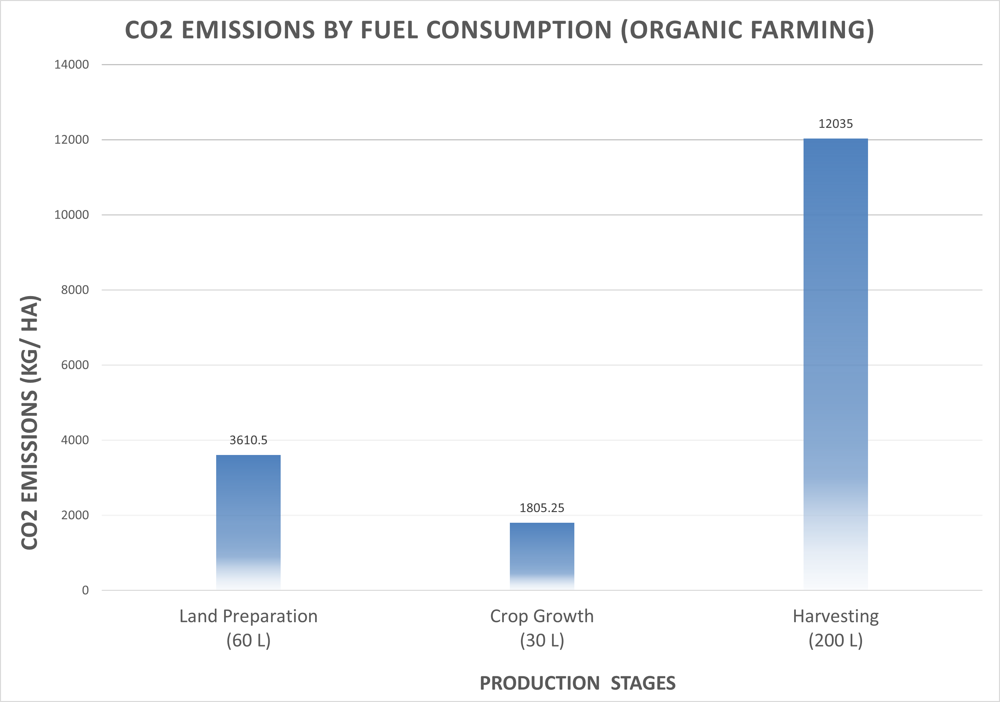
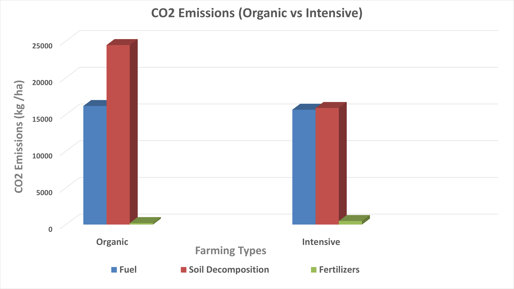

Comparative Analysis

1. CO₂ Emissions: Organic Farming
- Understanding the environmental impact of organic farming requires analysing emissions at each stage of crop production.
- Here's a breakdown of CO₂ emissions for potatoes grown organically.
2. CO₂ Emissions: Intensive Farming
- Assessing the environmental footprint of intensive farming involves examining CO₂ emissions throughout each stage of crop production.
- The chart provided highlights the emission levels associated with potato cultivation using high intensive methods.
3. CO₂ Emissions: Post-ploughing
- Soil ploughing disrupts natural soil structure.
- It accelerates the decomposition of organic matter in the soil.
- This process releases stored carbon as carbon dioxide (CO₂).
- CO₂ emissions from soil contribute to atmospheric greenhouse gases.
- The deeper the ploughing, the greater the amount of CO₂ released.
4. CO₂ Emissions: During Crop Growth
- The chart provided describes the contribution of each component to the total CO₂ emissions.

5. Overall CO₂ Emissions
- Here is a breakdown of CO₂ emissions for potatoes grown organically at each production source.
References
- Reeve, J., Hoagland, L., Villalba, J., Carr, P., Atucha, A., Cambardella, C., Davis, & Delate, K. (2016). Organic farming, soil health, and food quality: considering possible links. In Advances in agronomy (pp. 319-367). https://doi.org/10.1016/bs.agron.2015.12.003
- Baker, B. P., Green, T. A., & Loker, A. J. (2019). Biological control and integrated pest management in organic and conventional systems. Biological Control, 140, 104095. https://doi.org/10.1016/j.biocontrol.2019.104095
- Šarauskis, E., Masilionytė, L., Juknevičius, D., Buragienė, S., & Kriaučiūnienė, Z. (2019). Energy use efficiency, GHG emissions, and cost-effectiveness of organic and sustainable fertilisation. Energy, 172, 1151-1160. https://doi.org/10.1016/j.energy.2019.02.067
- Rutkowska, B., Szulc, W., Sosulski, T., Skowrońska, M., & Szczepaniak, J. (2018). Impact of reduced tillage on CO 2 emission from soil under maize cultivation. Soil and Tillage Research, 180, 21-28. https://doi.org/10.1016/j.still.2018.02.012
- Rani, Shalu & Johar, Vishal. (2024). Organic Farming: A way forward for sustainable development. http://dx.doi.org/10.58532/V3BCAGP1CH4
- Ivanov, A. A., Ukladov, E. O., & Golubeva, T. S. (2021). Phytophthora infestans: An Overview of Methods and Attempts to Combat Late Blight. Journal of fungi (Basel, Switzerland), 7(12), 1071. https://doi.org/10.3390/jof7121071
- Intensive farming | EBSCO. (n.d.). EBSCO Information Services, Inc. | www.ebsco.com. https://www.ebsco.com/research-starters/agriculture-and-agribusiness/intensive-farming
- Alemanno, R., Rossi, P., Monarca, D., & Bencini, A. (2025). Evaluation of tractor performance, efficiency and fuel consumption in vineyard activities. Scientific Reports, 15(1). https://doi.org/10.1038/s41598-025-93526-z
- Kyriakou, V., Garagounis, I., Vourros, A., Vasileiou, E., & Stoukides, M. (2019). An electrochemical Haber-Bosch process. Joule, 4(1), 142-158. https://doi.org/10.1016/j.joule.2019.10.006
- Xu, X., Xu, Y., Li, J., Lu, Y., Jenkins, A., Ferrier, R. C., Li, H., Stenseth, N. C., Hessen, D. O., Zhang, L., Li, C., Gu, B., Jin, S., Sun, M., Ouyang, Z., & Mathijs, E. (2023). Coupling of crop and livestock production can reduce the agricultural GHG emission from smallholder farms. iScience, 26(6), 106798. https://doi.org/10.1016/j.isci.2023.106798
- CBS Statline. (n.d.). https://opendata.cbs.nl/statline/#/CBS/en/dataset/7100eng/table?dl=5351A
- APA Citation: Pinckaers, M. (2008, January 23). Frozen Potato Products: Netherlands. USDA Foreign Agricultural Service, GAIN Report Number NL8002. Retrieved from https://apps.fas.usda.gov/gainfiles/200801/200801328.pdf
- Food and Agriculture Organization of the United Nations. (n.d.). Europe: Potato production, 2007. Food and Agriculture Organization of the United Nations. Retrieved April 10, 2025, from https://www.fao.org/4/i0500e/i0500e03e.pdf
Home
Introduction
Insights
Discussion
About Us
A